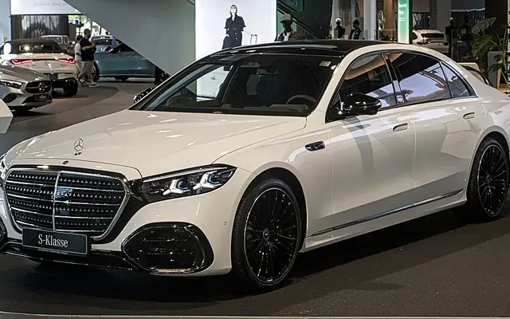

Par Motor › Precios por modelo › Mercedes-Benz Clase S
Precio de segunda mano · noviembre de 2026¿Cuánto vale un Mercedes-Benz Clase S de segunda mano?

Precio justo estimado de un Mercedes-Benz Clase S usado en España, año por año, con los kilómetros normales para su edad y en buen estado: de 10.800 € a 125.400 €. Para tasar el tuyo con sus kilómetros reales y su estado, usa el tasador gratis.
Precios del Mercedes-Benz Clase S por año
Clase S W221 (2005–2013)
Precio de nuevo: S 350 CDI 258 CV, 95.000 € · S 350 272 CV, 92.000 € · S 400 Hybrid 299 CV, 95.000 €
| Año | Km normales | S 350 CDI 258 CV · Diésel | S 350 272 CV · Gasolina | S 400 Hybrid 299 CV · Híbrido |
|---|---|---|---|---|
| 2013 | 100.000 km | 24.700 € | 24.600 € | 26.700 € |
| 2012 | 100.000 km | 22.300 € | 22.200 € | 24.100 € |
| 2011 | 100.000 km | 20.100 € | 20.100 € | 21.800 € |
| 2010 | 100.000 km | 18.100 € | 18.100 € | 19.600 € |
| 2009 | 100.000 km | 16.400 € | 16.300 € | 17.700 € |
| 2008 | 100.000 km | 14.800 € | 14.700 € | 16.000 € |
| 2007 | 100.000 km | 13.300 € | 13.300 € | 14.400 € |
| 2006 | 100.000 km | 12.000 € | 12.000 € | 13.000 € |
| 2005 | 100.000 km | 10.900 € | 10.800 € | 11.800 € |
Clase S W222 (2013–2020)
Precio de nuevo: S 350 d 286 CV, 100.000 € · S 450 367 CV, 110.000 € · S 500 e (enchufable) 442 CV, 115.000 €
| Año | Km normales | S 350 d 286 CV · Diésel | S 450 367 CV · Gasolina | S 500 e (enchufable) 442 CV · Híbrido enchufable |
|---|---|---|---|---|
| 2020 | 100.000 km | 44.600 € | 47.400 € | 44.600 € |
| 2019 | 100.000 km | 42.800 € | 43.200 € | 40.700 € |
| 2018 | 100.000 km | 40.800 € | 40.900 € | 38.500 € |
| 2017 | 100.000 km | 38.900 € | 38.700 € | 36.400 € |
| 2016 | 100.000 km | 35.300 € | 36.500 € | 34.300 € |
| 2015 | 100.000 km | 31.900 € | 34.300 € | 32.300 € |
| 2014 | 100.000 km | 28.800 € | 32.300 € | 30.400 € |
| 2013 | 100.000 km | 26.000 € | 29.500 € | 27.700 € |
Clase S W223 (2020–hoy)
Precio de nuevo: S 350 d 286 CV, 110.000 € · S 450 4MATIC 367 CV, 120.000 € · S 580 e (enchufable) 510 CV, 140.000 €
| Año | Km normales | S 350 d 286 CV · Diésel | S 450 4MATIC 367 CV · Gasolina | S 580 e (enchufable) 510 CV · Híbrido enchufable |
|---|---|---|---|---|
| 2026 | 10.000 km | 105.200 € | 119.400 € | 125.400 € |
| 2025 | 30.000 km | 84.500 € | 95.900 € | 100.700 € |
| 2024 | 50.000 km | 76.300 € | 86.600 € | 90.900 € |
| 2023 | 70.000 km | 68.800 € | 78.100 € | 82.000 € |
| 2022 | 90.000 km | 57.100 € | 70.500 € | 74.000 € |
| 2021 | 100.000 km | 51.000 € | 61.100 € | 64.100 € |
| 2020 | 100.000 km | 49.100 € | 51.700 € | 54.300 € |
Kilómetros normales: 15.000 al año en gasolina, híbridos y eléctricos, y 20.000 en diésel, con un máximo de 100.000 km (por encima no tasamos: el precio depende demasiado del historial de cada coche). Cifras redondeadas a 100 €.
Preguntas frecuentes
¿Cuánto vale un Mercedes-Benz Clase S de segunda mano?
Según el año, la versión y los kilómetros, un Mercedes-Benz Clase S usado vale hoy de 10.800 € a 125.400 € en España. El más barato de nuestra tabla es un S 350 de 2005 (10.800 €) y el más caro un S 580 e (enchufable) de 2026 (125.400 €). Son precios justos estimados entre particulares y profesionales, con los kilómetros normales para su edad y en buen estado.
¿Cuánto valor pierde un Mercedes-Benz Clase S al año?
Con unos años encima, un Mercedes-Benz Clase S pierde alrededor de un 12 % de su valor cada año (calculado sobre el S 350 d de la generación Clase S W223). Los primeros años la caída es mayor y a partir de los 70.000 km se acelera.
¿Qué motorizaciones tiene el Mercedes-Benz Clase S?
En nuestra base de datos hay versiones diésel, gasolina, híbrido y híbrido enchufable, en 3 generaciónes: Clase S W221, Clase S W222 y Clase S W223.
¿Cómo sé si me piden demasiado por un Mercedes-Benz Clase S?
Abre el tasador de Par Motor, elige el Mercedes-Benz Clase S, el año y los kilómetros reales, y escribe lo que te piden. Te diremos si está por debajo del precio justo (chollo) o por encima (caro). Es gratis y no pide registro ni matrícula.
Otros Mercedes-Benz
- CLA
- Clase A
- Clase B
- Clase C
- Clase E
- Clase G
- Clase T
- Clase V
- CLK
- CLS
- EQA
- EQB
- EQE
- EQS y EQC
- GLA
- GLB
- GLC
- ML y GLE
- SL y AMG GT
- SLK y SLC
Compara su coste real
El precio de compra es solo una parte. Mira cuánto te costaría al mes con combustible, seguro, neumáticos, mantenimiento y lo que pierde de valor.
Abrir el comparador →